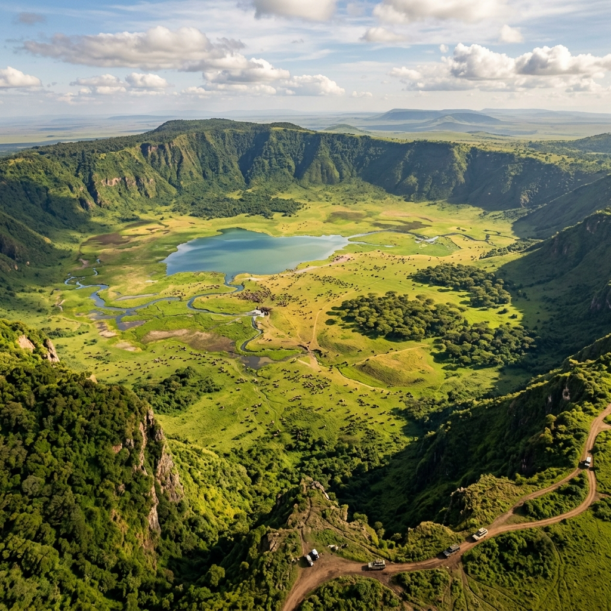
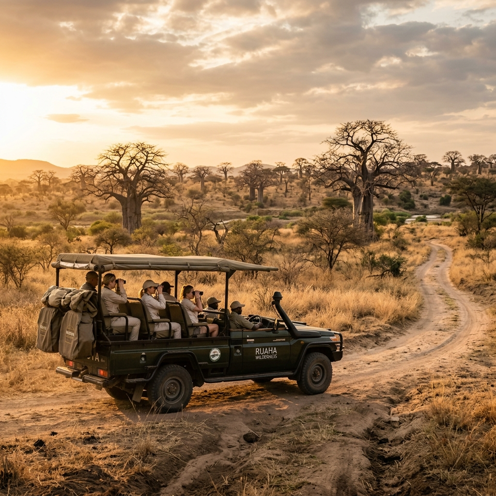

One of Africa’s last true wilderness areas.
Once one of the world’s biggest game reserves, Selous has recently been split up to accommodate the new Nyerere National Park in honour of Tanzania’s first President Julius Nyerere. Together, the parks cover around 50,000 square kilometres in southern Tanzania, an area several times the size of the Serengeti.
The Selous Game Reserve is off the beaten path, and only 1% of Tanzania’s tourists visit this part of the country. It is often seen as one of Africa’s last true wilderness areas – its savannah spans as far as you can see, and you can go days without ever seeing a car or another traveller.
One of the best sights within this game reserve is the Rufiji River, a gigantic river with a high density of crocodiles and hippos. Together with the Great Ruaha River, it creates a river delta, making for formidable game viewing and some of the most exciting boat safaris in East Africa.


Selous boasts some of the best wildlife densities in Tanzania. The reserve has hippos, buffalo, wildebeests, and zebras inhabit an area the size of Denmark. There are well over 1000 buffaloes in Selous Game Reserve.
The sheer amount of prey attracts a diversity of predators including lions, as well as leopards, hyenas and crocodiles. Some rarer species include the African wild dog, of which 50% of its population live in Selous, as well as the sable and puku antelopes.
Bird enthusiasts will also cherish this place, as 440 different species of bird populate this area. These can best be discovered by a boat safari.
By air: The most convenient option is by plane from Dar es Salaam (45 minutes) or Ruaha (90 minutes).
By car: From Dar es Salaam it is a 4-6 hour drive, passing by the stunning Mikumi National Park.
By train: The TAZARA train line from Dar es Salaam takes 4-5 hours and offers stunning views of wildlife directly from the train (though it is notoriously late).
The dry season from June to October is perfect for game viewing, as the vegetation is more sparse. March to May and late October to mid-December is the rainy season, making roads impassable.
For bird enthusiasts, the shorter dry season from mid-December to March is recommended as migratory birds settle here. If the scarce wild dog is what you are after, June to August is perfect, as this is their denning season.